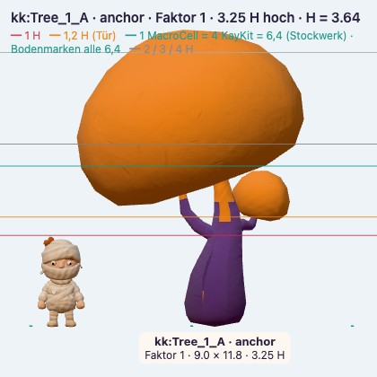
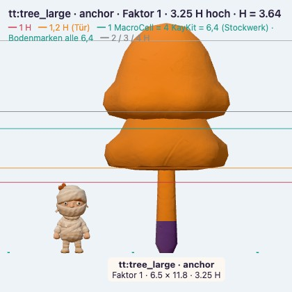
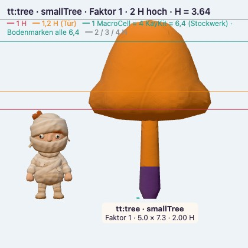
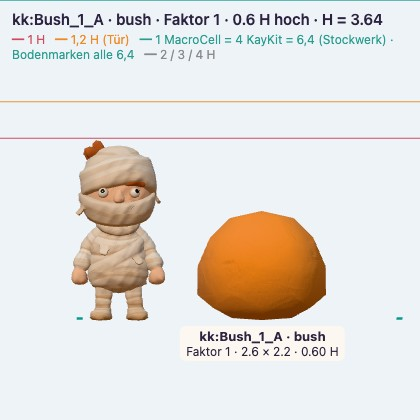
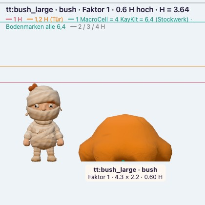
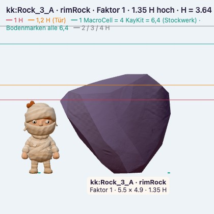
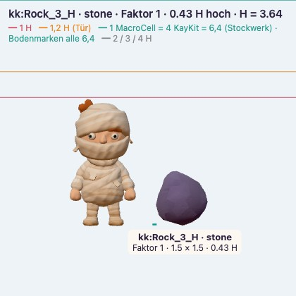
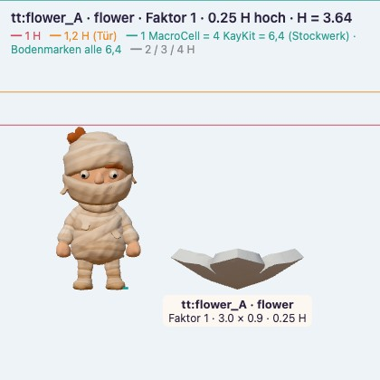
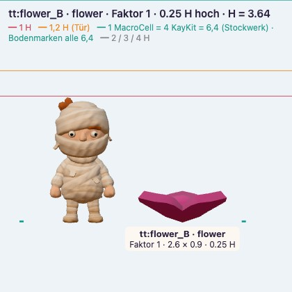
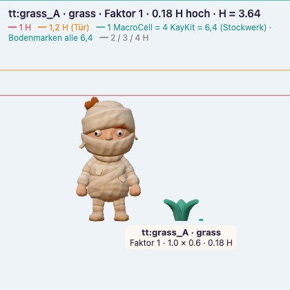

StraßenbaumKayKit · primärTree_1_A · 3.25 H
ParkbaumTiny Treats · primärtree_large · 3.25 H
JungbaumTiny Treats · primärtree · 2 H
Hecke rundKayKit · primärBush_1_A · 0.6 H
ZiergebüschTiny Treats · primärbush_large · 0.6 H
SchieferbrockenKayKit · primärRock_3_A · 1.35 H
SchieferkieselKayKit · primärRock_3_H · 0.43 H
Beetblume weißTiny Treats · primärflower_A · 0.25 H
Beetblume blauTiny Treats · primärflower_B · 0.25 H
RasenTiny Treats · primärgrass_A · 0.18 H